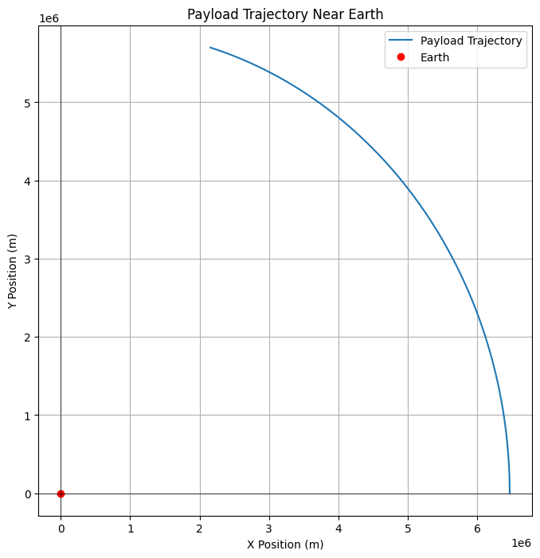
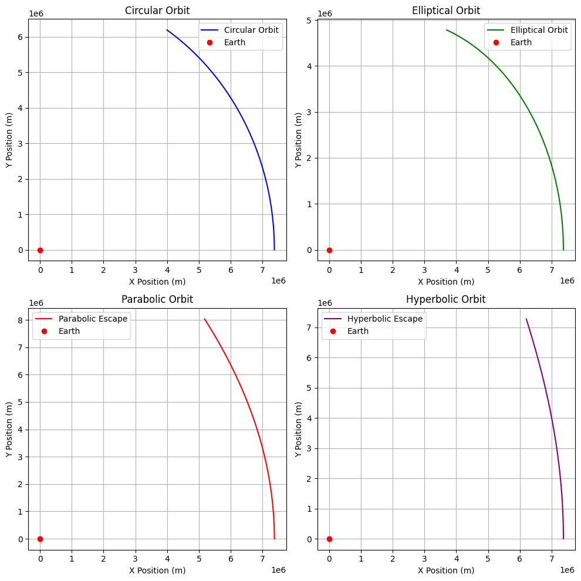

Problem 3
Trajectories of a Freely Released Payload Near Earth
Motivation
When a payload is released from a moving rocket near Earth, its trajectory is influenced by initial conditions (position, velocity) and gravitational forces. This is crucial for understanding orbital insertion, reentry, and escape scenarios.
Key Concepts
1. Newton's Law of Gravitation
The gravitational force \( F \) between two bodies is:
Where: - \( G \) is the gravitational constant, - \( M \) is Earth's mass, - \( m \) is the payload's mass, - \( r \) is the distance between the centers of Earth and the payload.
2. Orbital Types
Circular Orbit:
For a circular orbit, the required orbital velocity \( v_c \) is:
Elliptical Orbit:
For elliptical orbits, the velocity varies. The semi-major axis \( a \) and eccentricity \( e \) determine the orbit's shape. The vis-viva equation is:
Where: - \( v \) is the velocity at a distance \( r \), - \( a \) is the semi-major axis, - \( r \) is the distance from the center of Earth.
Parabolic Orbit:
For a parabolic orbit, the velocity is equal to the escape velocity:
Hyperbolic Orbit:
For hyperbolic escape, the velocity exceeds the escape velocity. The specific orbital energy \( \epsilon \) is:
Where \( \epsilon > 0 \) for hyperbolic trajectories.
3. Escape Velocity
The escape velocity \( v_e \) at distance \( r \) is:
Where \( r \) is the radial distance from Earth's center.
Here's the equation written in proper Markdown with LaTeX formatting:
Numerical Integration of Motion
The equations of motion under Earth's gravity are:
Where: - \( x, y \) are the payload’s position coordinates, - \( G \) is the gravitational constant, - \( M \) is Earth's mass.
Applications
- Orbital Insertion: Requires velocity \( v_c = \sqrt{\frac{GM}{r}} \).
- Escape: Achieved when \( v > v_e \).
- Reentry: Occurs when the payload returns with insufficient velocity to maintain orbit.
 
Conclusion
The payload’s trajectory depends on initial velocity and position. By applying these equations, we can predict orbital paths, escape conditions, and reentry scenarios.